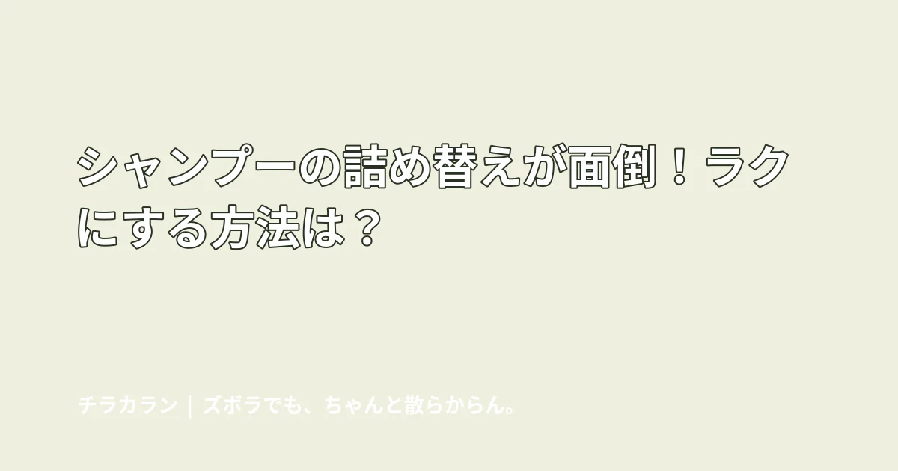

シャンプーの詰め替えが面倒！ラクにする方法は？
シャンプーの詰め替えが面倒なら、詰め替え回数を減らす、袋のまま使うなど「ボトルへ移す作業」を減らす方法があります。

結論：詰め替えを上手にするより、詰め替えなくていい方法を考える
袋を切る、ボトルを洗う、乾かす、こぼさず入れる。シャンプーの詰め替えは意外と工程が多い家事です。
方法1：大容量を選んで回数を減らす
同じ作業でも年12回と年4回では負担が違います。ただし保管場所や持ち上げやすさも確認しましょう。
方法2：詰め替え袋のまま使う
詰め替えパウチへ直接取り付けるポンプやホルダーがあります。ボトルへ移す工程を省けるのがメリットです。対応するパウチ形状や取り付け方法は商品ごとに確認が必要です。
方法3：吊るして床や棚から離す
袋のまま吊るせるタイプなら、詰め替えだけでなくボトル底のヌメリ対策にもつながります。
ボトルを使い続けるなら補充のタイミングを決めすぎない
少なくなった瞬間に必ず補充、と決めると面倒です。予備を浴室近くに置き、使い切ったタイミングで交換できるようにしておく方が簡単です。
まとめ
「ちゃんと詰め替える」を頑張る必要はありません。回数を減らすか、そもそも移し替えない仕組みにできないかから考えてみましょう。
この悩みで使いやすいアイテム
当サイトはアフィリエイト広告を利用しています。
詰め替えそのまま シャンプー ポンプ
ショップ連携後に購入先ボタンが表示されます。
シャンプー 吊り下げ ホルダー
ショップ連携後に購入先ボタンが表示されます。
チラカランの考え方
頑張る回数を増やすより、頑張らなくても回る仕組みを。